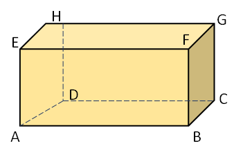
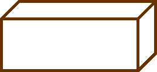
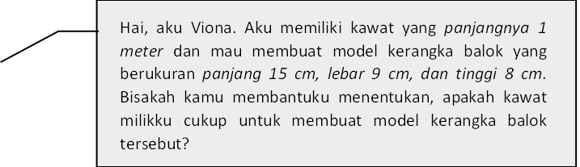
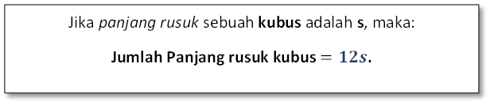
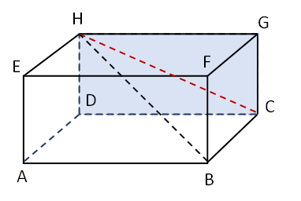
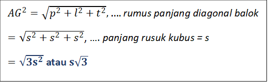
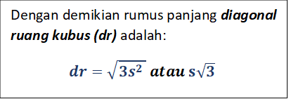

SUB. 1
Apa itu kubus dan Balok?
a. Kubus Gambar tersebut menunjukkan sebuah bangun ruang yang semua sisinya berbentuk persegi dan semua rusuknya sama panjang. Bangun ruang seperti itu dinamakan dengan kubus, yaitu kubus ABCD.EFGH
Kubus dan balok merupakan bentuk bangun ruang yang sangat mudah kita temukan dalam kehidupan sehari-hari. Sebagai contoh: mainan dadu, rubik, lemari, tempat pensil, batu bata untuk membangun rumah, minuman kemasan kotak seperti jus dan susu, dan masih banyak lagi.
b. Balok
Gambar tersebut menunjukkan bangun ruang yang memiliki tiga pasang sisi berhadapan yang memiliki bentuk dan ukuran yang sama, dimana setiap sisinya berbentuk persegi panjang. Bangun ruang seperti itu dinamakan dengan balok, yaitu balok ABCD.EFGH
SUB. 2
Unsur-Unsur pada Kubus dan Balok
a. Mengenal Bidang, Rusuk, dan Titik Sudut
- Kubus dan balok memiliki bidang yang membatasi bagian dalam dan bagian luar yang disebut bidang sisi, yang selanjutnya disebut bidang atau sisi.
- Bidang-bidang pada suatu balok maupun kubus berpotongan atau bertemu pada suatu garis disebut rusuk.
- Rusuk-rusuk pada suatu balok maupun kubus berpotongan pada sebuah titik disebut titik sudut.
CONTOH 1. Perhatikan kubus beserta unsur-unsurnya pada gambar berikut!
b. Kerangka Balok
|  |  |
Mari kita bantu Viona menyelesaikan permasalahannya!
Untuk membuat model kerangka balok dengan ukuran tersebut, kita membutuhkan:
Potongan kawat yang panjangnya 15 m sebanyak 4 batang, 9 cm sebanyak 4 batang, 8 cm sebanyak 4 batang.
Jumlah panjang kawat yang dibutuhkan Viona untuk membuat model kerangka balok tersebut.
Artinya kawat yang dimiliki Viona tidak cukup panjang untuk merangkai kerangka balok yang berukuran panjang 15 cm, lebar 9 cm, dan tinggi 8 cm. (Dia hanya memiliki 100 cm, sedangkan yang dibutuhkan sebanyak 128 cm).
Apa yang dapat kita simpulkan dari permasalahan diatas? Untuk membuat model kerangka kubus dengan panjang rusuk s cm, jumlah panjang kawat yang diperlukan antara lain: Banyak rusuk 12 buah dan rusuk-rusuk itu sama panjang, yaitu s cm.
Garis HC menghubungkan dua titik sudut, yaitu titik H dan C. Garis HC disebut diagonal. Selain itu, HC juga terletak pada bidang atau sisi balok. Oleh karena itu, HC disebut diagonal bidang. Sementara itu, diagonal HB terletak di dalam ruang balok, maka HB disebut diagonal ruang.
= (4×15+4×9+4×8) cm
= 60+36+32 cm
= 128 cm (lebih dari 1 m)
c. Kerangka Kubus
Jadi, jumlah panjang kawat yang diperlukan = 12.s cm

d. Perbedaan Diagonal Bidang dan Diagonal Ruang

Pada gambar di samping, HB adalah diagonal ruang. Oleh karena HD ⊥ DB dan AB ⊥ AD, maka:
Selanjutnya, kita akan mencari rumus untuk panjang diagonal kubus dengan menggunakan rumus panjang diagonal ruang balok. Perhatikan soal berikut!
Menemukan Rumus Diagonal Ruang Kubus
Kubus merupakan balok yang rusuk-rusuknya sama panjang. Dengan demikian, rumus panjang diagonal ruang balok berlaku untuk kubus, yaitu:
|  |  |
SUB. 3
Jaring-Jaring Kubus dan Balok
a. Jaring-Jaring Kubus
Jaring-jaring kubus merupakan rangkaian 6 buah persegi yang jika dilipat-lipat menurut garis persekutuan dua persegi dapat membentuk kubus, tetapi tidak boleh ada bidang yang rangkap atau bertumpuk. Dengan demikian, tidak semua rangkaian 6 buah persegi merupakan jaring-jaring kubus.
Berikut ini 11 contoh jaring-jaring kubus yang bisa dibuat:
b. Jaring-Jaring Balok
Jaring-jaring balok merupakan rangkaian enam buah persegi panjang yang jika dilipat menurut garis persekutuan dua persegi panjang dapat membentuk sebuah balok.
SUB. 4
Luas Permukaan kubus dan Balok?
a. Luas Permukaan Kubus
Ketika kita ingin membuat kotak perhiasan berbentuk kubus dari sehelai karton. Jika kotak perhiasan yang diinginkan memiliki panjang rusuk 6 cm, berapa luas karton yang dibutuhkan untuk membuat kotak perhiasan tersebut? Masalah ini dapat diselesaikan dengan cara menghitung luas permukaan suatu kubus (Agus, 2007).
Pada gambar terlihat suatu kubus beserta jaring-jaringnya. Untuk mencari luas permukaan kubus, berarti sama saja dengan menghitung luas jaring-jaring kubus tersebut. Oleh karena jaring-jaring kubus merupakan 6 buah persegi yang sama dan kongruen maka
b. Luas Permukaan Balok
Cara menghitung luas permukaan balok sama dengan cara menghitung luas permukaan kubus, yaitu dengan menghitung semua luas jaring-jaringnya. Coba kamu perhatikan gambar berikut
Gambar di atas menunjukkan balok yang berukuran panjang = p, lebar = l, dan tinggi = t. Untuk menentukan luas permukaan balok gambar (1), perhatikan gambar (2) yang menunjukkan balok beserta jaring-jaringnya.
Pembahasan
- Bidang alas kongruen (sama dan sebangun) dengan bidang atas, maka:
Luas bidang alas dan atas = 2 × (p×l) = 2pl
- Bidang depan kongruen (sama dan sebangun) dengan bidang belakang, maka:
Luas bidang depan dan belakang = 2 × (p×t) = 2pt
- Bidang kiri sama dan sebangun dengan bidang kanan, maka:
Luas bidang kiri dan kanan = 2 × (l×t) = 2lt